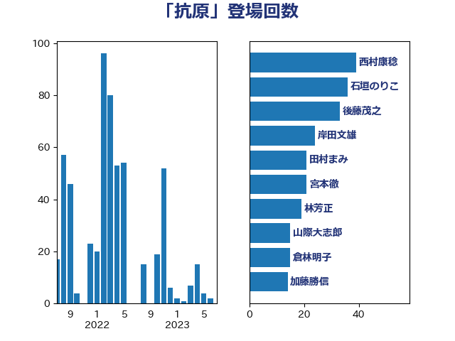

単語「抗原」

| 西村康稔 | 自由民主党 | 39 回 |
| 石垣のりこ | 立憲民主党 | 36 回 |
| 後藤茂之 | 自由民主党 | 33 回 |
| 岸田文雄 | 自由民主党 | 24 回 |
| 田村まみ | 国民民主党 | 21 回 |
| 宮本徹 | 日本共産党 | 21 回 |
| 林芳正 | 自由民主党 | 19 回 |
| 山際大志郎 | 自由民主党 | 15 回 |
| 倉林明子 | 日本共産党 | 15 回 |
| 加藤勝信 | 自由民主党 | 14 回 |
| 後藤祐一 | 立憲民主党 | 10 回 |
| 吉良よし子 | 日本共産党 | 9 回 |
| 若松謙維 | 公明党 | 8 回 |
| 田中健 | 国民民主党 | 8 回 |
| 安江伸夫 | 公明党 | 8 回 |
| 遠藤敬 | 日本維新の会 | 7 回 |
| 田村憲久 | 自由民主党 | 7 回 |
| 浜地雅一 | 公明党 | 5 回 |
| 横沢高徳 | 立憲民主党 | 5 回 |
| 東徹 | 日本維新の会 | 5 回 |
| 川田龍平 | 立憲民主党 | 5 回 |
| 大串博志 | 立憲民主党 | 5 回 |
| 塩村あやか | 立憲民主党 | 5 回 |
| 赤嶺政賢 | 日本共産党 | 4 回 |
| 神谷政幸 | 自由民主党 | 4 回 |
| 池下卓 | 日本維新の会 | 4 回 |
| 江田憲司 | 立憲民主党 | 4 回 |
| 柳本顕 | 自由民主党 | 4 回 |
| 末松信介 | 自由民主党 | 4 回 |
| 川崎ひでと | 自由民主党 | 4 回 |
| 塩田博昭 | 公明党 | 4 回 |
| 古川康 | 自由民主党 | 4 回 |
| 仁木博文 | 無所属 | 4 回 |
| 矢倉克夫 | 公明党 | 3 回 |
| 田村智子 | 日本共産党 | 3 回 |
| 玉木雄一郎 | 国民民主党 | 3 回 |
| 島村大 | 自由民主党 | 3 回 |
| 佐藤英道 | 公明党 | 3 回 |
| 佐藤正久 | 自由民主党 | 3 回 |
| 伊佐進一 | 公明党 | 3 回 |
| おおつき紅葉 | 立憲民主党 | 3 回 |
| 鰐淵洋子 | 公明党 | 2 回 |
| 野田国義 | 立憲民主党 | 2 回 |
| 芳賀道也 | 国民民主党 | 2 回 |
| 水野素子 | 立憲民主党 | 2 回 |
| 水岡俊一 | 立憲民主党 | 2 回 |
| 梅村聡 | 日本維新の会 | 2 回 |
| 柚木道義 | 立憲民主党 | 2 回 |
| 打越さく良 | 立憲民主党 | 2 回 |
| 山添拓 | 日本共産党 | 2 回 |
| 小川淳也 | 立憲民主党 | 2 回 |
| 大塚耕平 | 国民民主党 | 2 回 |
| 國場幸之助 | 自由民主党 | 2 回 |
| 古賀篤 | 自由民主党 | 2 回 |
| 伊藤岳 | 日本共産党 | 2 回 |
| 伊藤俊輔 | 立憲民主党 | 2 回 |
| 阿部知子 | 立憲民主党 | 1 回 |
| 長谷川淳二 | 自由民主党 | 1 回 |
| 長浜博行 | 無所属 | 1 回 |
| 長友慎治 | 国民民主党 | 1 回 |
| 野間健 | 立憲民主党 | 1 回 |
| 重徳和彦 | 立憲民主党 | 1 回 |
| 赤澤亮正 | 自由民主党 | 1 回 |
| 藤川政人 | 自由民主党 | 1 回 |
| 菅義偉 | 自由民主党 | 1 回 |
| 羽田次郎 | 立憲民主党 | 1 回 |
| 羽生田俊 | 自由民主党 | 1 回 |
| 穀田恵二 | 日本共産党 | 1 回 |
| 稲富修二 | 立憲民主党 | 1 回 |
| 石井啓一 | 公明党 | 1 回 |
| 片山大介 | 日本維新の会 | 1 回 |
| 熊谷裕人 | 立憲民主党 | 1 回 |
| 浜口誠 | 国民民主党 | 1 回 |
| 泉健太 | 立憲民主党 | 1 回 |
| 櫻井充 | 自由民主党 | 1 回 |
| 柳ヶ瀬裕文 | 日本維新の会 | 1 回 |
| 本田顕子 | 自由民主党 | 1 回 |
| 斎藤アレックス | 国民民主党 | 1 回 |
| 岸真紀子 | 立憲民主党 | 1 回 |
| 岩谷良平 | 日本維新の会 | 1 回 |
| 小野泰輔 | 日本維新の会 | 1 回 |
| 小西洋之 | 立憲民主党 | 1 回 |
| 小沼巧 | 立憲民主党 | 1 回 |
| 小池晃 | 日本共産党 | 1 回 |
| 吉田はるみ | 立憲民主党 | 1 回 |
| 吉田とも代 | 日本維新の会 | 1 回 |
| 古屋範子 | 公明党 | 1 回 |